سجل إنجازاتنا وأنشطتنا
اكتشف تغطيات لأبرز الأنشطة التي أقامها نادي إدراك. سيتم الإعلان عن الفعاليات القادمة قريباً.
تغطيات الفعاليات السابقة
المشاركة في اللقاء السنوي للمستجدين
سعدنا بالمشاركة في اللقاء السنوي للمستجدين بجامعة المجمعة، حيث استعرضنا هوية النادي ورسالتنا في تنمية مهارات الطلبة وصناعة بيئة جامعية ملهمة ومليئة بالإبداع. شكرًا لجامعة المجمعة وعمادة شؤون الطلاب على هذا التنظيم الرائع والدعم المستمر.
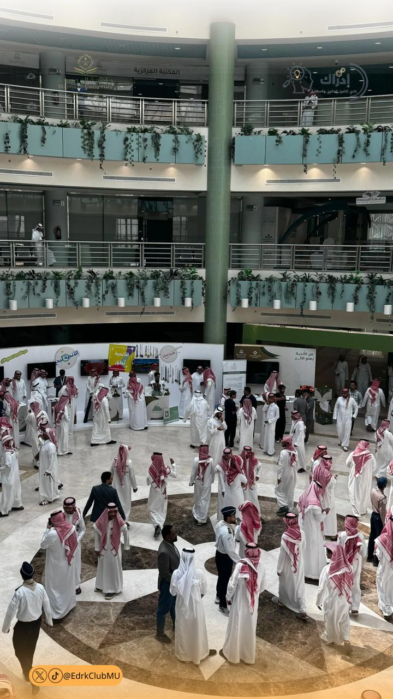
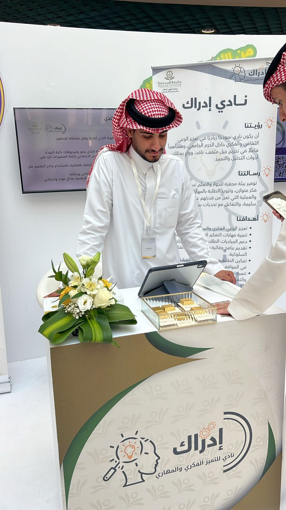
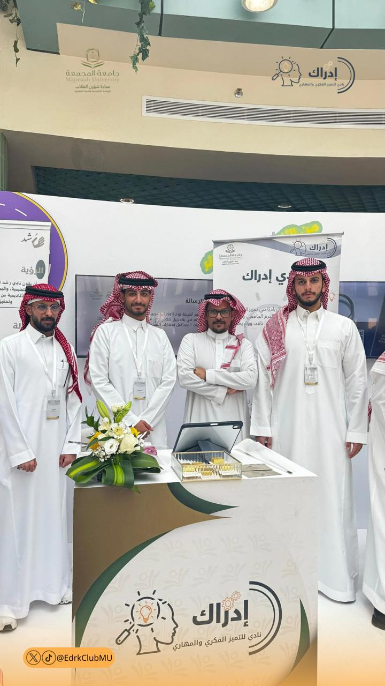
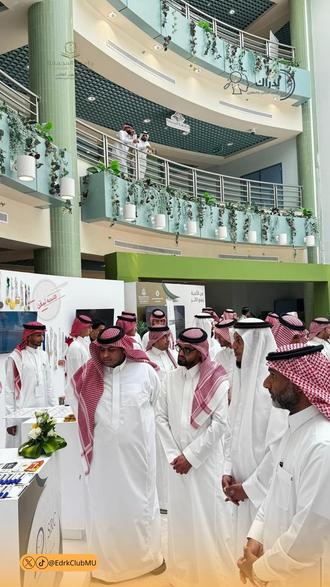
انطلاقة النادي بـ "رحلة وعي"
فعالية شهدت حضوراً لافتاً من الطلاب الذين تميزوا بحماسهم وتفاعلهم الكبير، وكانت بداية لعامٍ واعدٍ بالتميز والإنجازات.
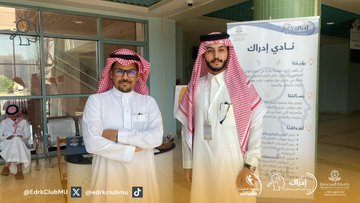
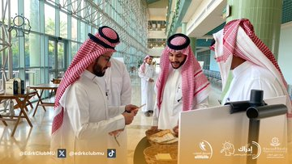
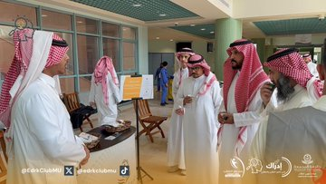
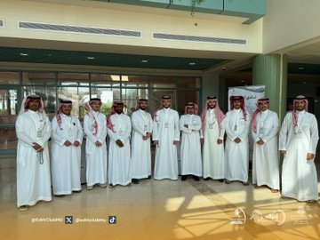
ملتقى اليوم العالمي للصحة النفسية
مساهمة نادي إدراك بفعاليات مميزة تهدف إلى تعزيز الوعي بالصحة النفسية ونشر ثقافة الاهتمام بها في الجامعة.
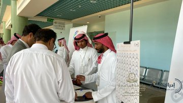
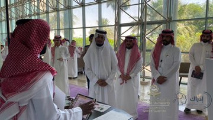
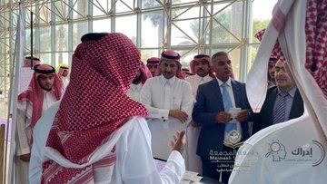
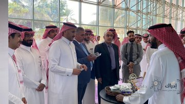
فعالية الصحة النفسية بمجمع الطالبات
تفعيل اليوم العالمي للصحة النفسية في مجمع الطالبات، بهدف تعزيز أهمية الصحة النفسية في بيئة جامعية داعمة وآمنة.
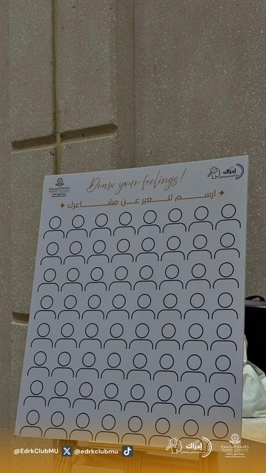
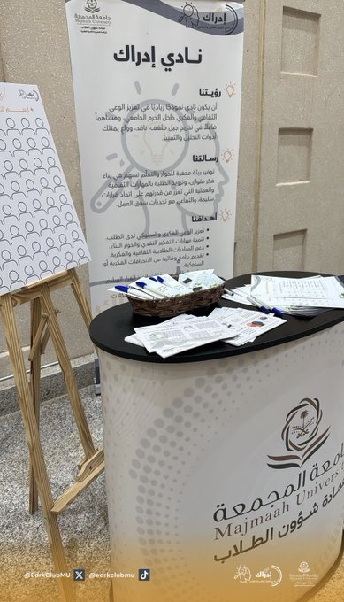
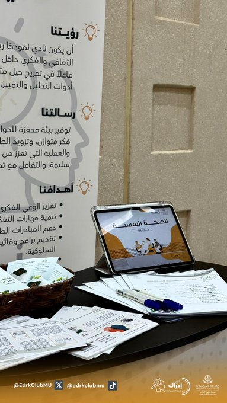
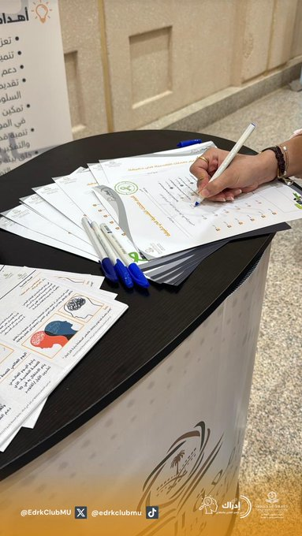